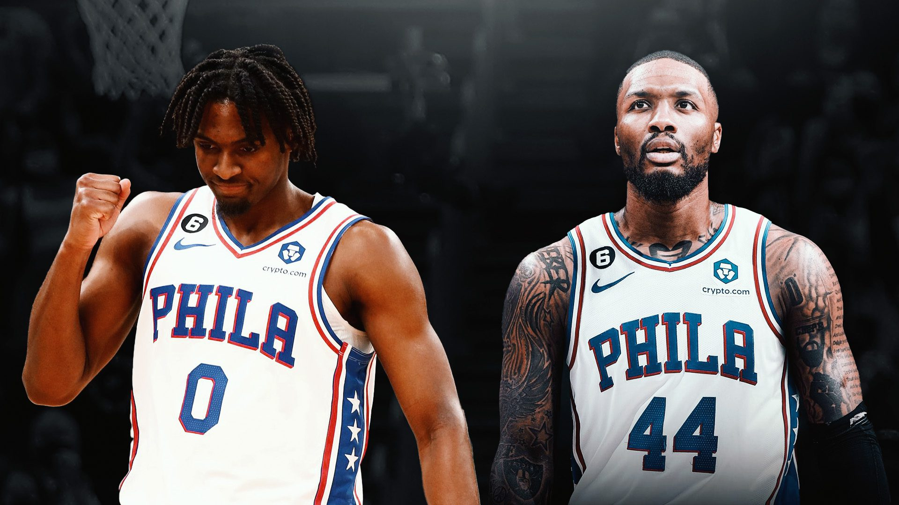

Le principal barrage routier dans le scénario.
Certains pourraient penser que les barrages routiers dans le commerce de James Harden et Damian
Lillard sont liés, mais ils ne semblent pas l'être.
Les Sixers ont manifesté leur intérêt pour Lillard et de nombreux initiés ont proposé que la
franchise puisse remplacer Harden par Dame.
Mais le principal obstacle à un échange de Lillard est la jeune star Tyrese Maxey puisque les 76ers
refusent de le déplacer pour qui que ce soit, a déclaré Brian Windhorst d'ESPN.
« [The 76ers] veulent que vous sachiez que vous ne pouvez pas avoir Tyrese Maxey », a déclaré
Windhorst sur le podcast Hoop Collective le 3 juillet. « Prime Michael Jordan est disponible ?
N'appelez pas. LeBron James, 25 ans, est-il disponible ? Perdre notre numéro. Giannis Antetokounmpo
dit: "Je veux être un Sixer", si Tyrese Maxey est la demande, continuez à marcher. Tyrese Maxey,
m'a-t-on assuré, ne sera pas échangé.
Windhorst a partagé des sentiments similaires sur Sportscenter le même jour.
.svg)